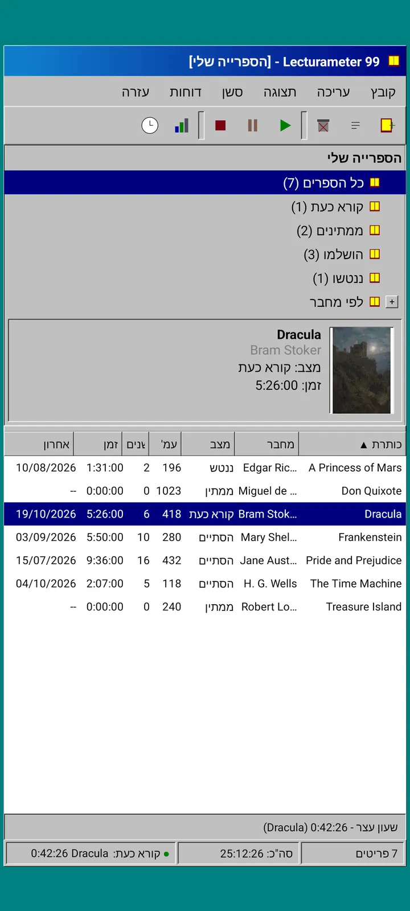
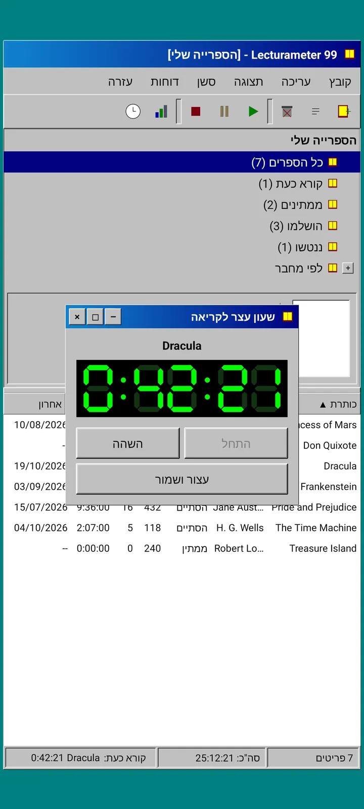
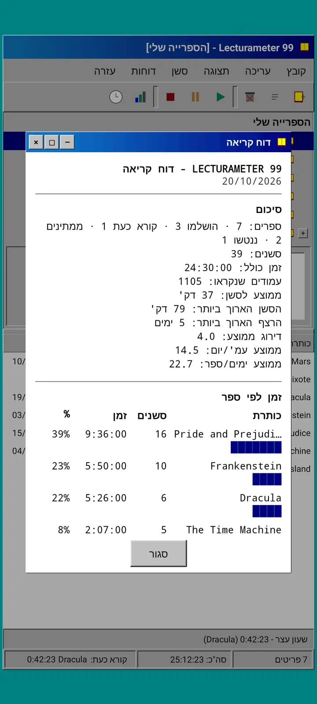
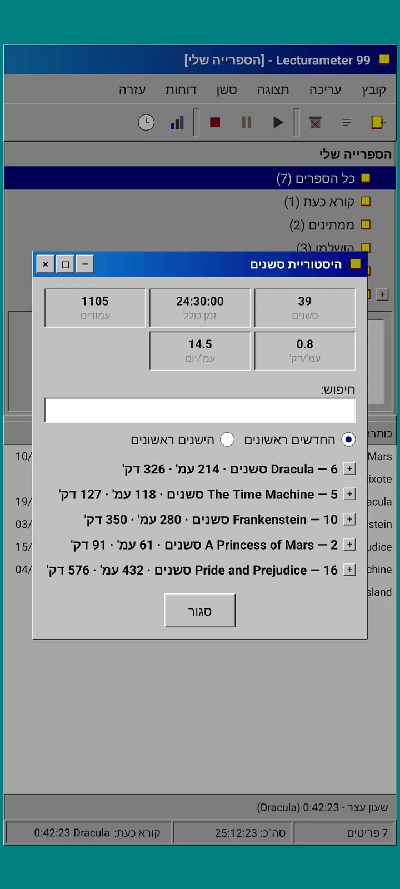
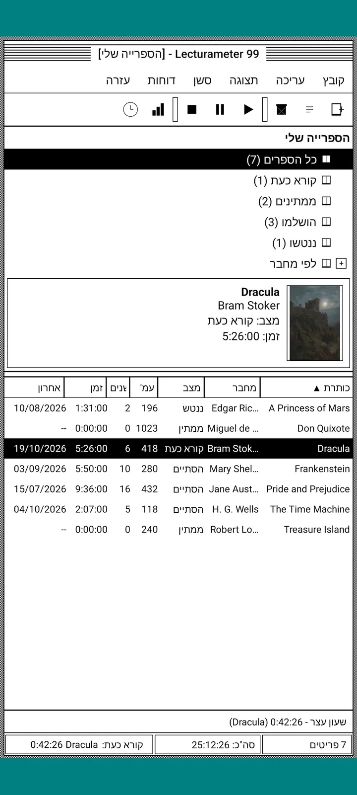
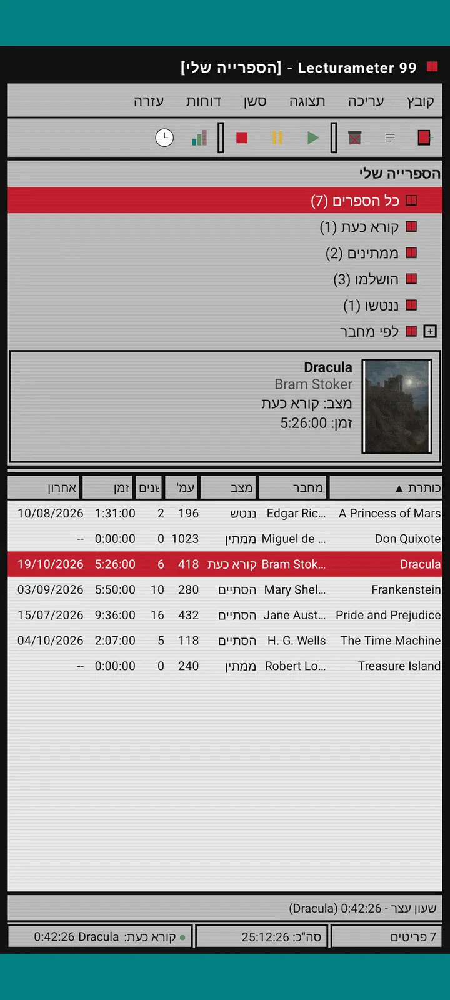
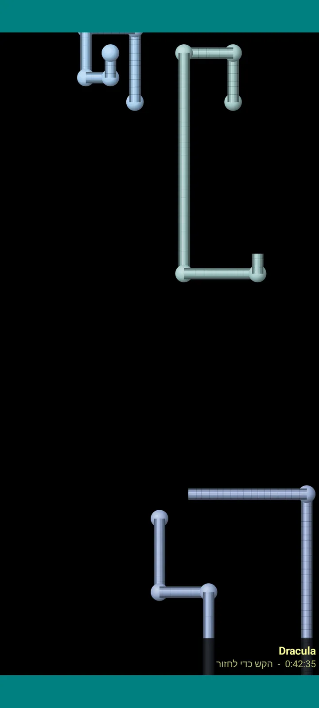

Lecturameter 1999
Lecturameter כאילו התקנת אותה מתקליטור ב-1999. לקוח חלופי לאפליקציה, עם חלונות, תפריטים וטבלאות, שפותח את הגיבויים האמיתיים שלך.

מה זה
תוכנת שולחן עבודה מסוף שנות התשעים שרצה בטלפון שלך. חלון אחד מעל שולחן עבודה בצבע טורקיז, שורת תפריטים, סרגל כלים, עץ תיקיות, טבלה צפופה ושורת מצב.
- עץ הספרייה: כל הספרים, קורא כעת, ממתינים, הושלמו, ננטשו ולפי מחבר
- טבלה עם כותרת, מחבר, סטטוס, עמודים, סשנים, זמן וקריאה אחרונה. הקש על כותרת עמודה כדי למיין
- חיפוש ספרים אמיתי, עם אותו קטלוג ש-Lecturameter משתמשת בו
- מייבאת ומייצאת את הגיבוי של Lecturameter ואת ה-CSV של Goodreads. הנתונים שלך נכנסים ויוצאים בלי לאבד כלום

למה זה קיים
ניסוי: לבנות מחדש את הרעיון של Lecturameter מאפס לפי הנחות עיצוב שונות לחלוטין, בלי לגעת באפליקציה האמיתית. מכל הפרשנויות החדשות, זו של 1999 הייתה זו שהכי אהבתי, אז סיימתי אותה כתרגיל מהנה והפכתי אותה ללקוח מלא. היא פשוטה יותר מ-Lecturameter בכוונה: זה ניסוי, ובעיקרון לא יהיה לה פיתוח נוסף.
- שעון עצר בחלון צף עם צג LCD ירוק. אפשר להזיז אותו, למזער אותו לשורת המשימות, והוא ממשיך לספור בשורת המצב
- כשאתה עוצר, חלון שמירת הסשן מבקש את העמודים ומחשב את הקצב שלך, בדיוק כמו ב-Lecturameter
- הסשנים השמורים הם סשנים של Lecturameter: הם חוזרים לאפליקציה המודרנית אם תייצא גיבוי של Lecturameter 1999 ותייבא אותו ב-Lecturameter.

דוח קריאה
הסטטיסטיקות הן דוח מודפס: סיכום, זמן לכל ספר עם פסי בלוקים, מהירות בעמודים ליום, לוח שנה של השנה שמצויר בתווים ושבעת הימים האחרונים.

היסטוריית סשנים
סשנים מקובצים לפי ספר בעץ עם פלוס ומינוס, וחמישה מספרים למעלה: סשנים, זמן כולל, עמודים, עמודים לדקה ועמודים ליום.

שמירת סשן
תאריך, דקות, עמוד ראשון ואחרון, הערה. הסיכום מחשב עמודים וקצב תוך כדי הקלדה. אם הגעת לעמוד האחרון, הוא שואל אם סיימת את הספר.

Pagi 99
גם Pagi נוסע ל-1999: מפוקסל וחופשי על המסך כמו עוזרי המשרד של אותה תקופה. אפשר לגרור אותו, הוא אומר משפט כשמקישים עליו ומציג טיפים בבועות צהובות.
ערכות נושא
קלאסי 98 חינמית וברירת המחדל. החבילה מוסיפה עוד שש, כל אחת עם רקע וצלילים משלה.

בוחרים אותה מתפריט תצוגה
תצוגה, ערכת נושא... פותח חלון עם שבע ערכות הנושא. השינוי מגיע מיד לכל החלונות, לשעון העצר ול-Pagi.
- קלאסי 98, חינמית וברירת המחדל: חלונות אפורים, פסי כותרת בכחול כהה ושולחן עבודה בצבע טורקיז
- חבילת ערכות נושא: 1984, סוכרייה, זיכרון, מגדלים, ליבה ו-8 ביט
- כל ערכת נושא מגיעה עם רקע שולחן עבודה משלה וצלילים משלה להקשות, לחלונות ולשעון העצר
- תצוגה, צלילי ערכת נושא מכבה את הצלילים אם אתה קורא בשקט

קלאסי 98
חלונות אפורים, פסי כותרת בכחול כהה ושולחן עבודה בצבע טורקיז. חינמית, והאפליקציה נפתחת איתה.

1984
שולחן עבודה בשחור-לבן של ביט אחד, עם דוגמאות נקודות וחלונות מרובעים.

סוכרייה
פלסטיק צבעוני שקוף למחצה, כפתורים מעוגלים ופסים ברקע.

זיכרון
התפריטים של קונסולת דיסקים משנות התשעים, בגוונים של כחול כהה.

מגדלים
עוד קונסולת דיסקים משנות התשעים, בכחול לילה עם קווים בכחול בהיר.

ליבה
קונסולה בשחור וירוק, כמו מסך שאף פעם לא נכבה.

8 ביט
פיקסלים שמנים, מעט צבעים ואותיות מרובעות.

נסה לפני שאתה משלם
הקש על ערכת נושא נעולה וכל האפליקציה מתחלפת אליה. אם תסגור בלי לקנות, ערכת הנושא הקודמת חוזרת.
שומרי מסך
הם מופיעים רק כששעון העצר רץ ואתה לא נוגע בטלפון. הם מחכים 1, 3 או 5 דקות, או אף פעם. הקשה אחת מחזירה אותך, ושעון העצר ממשיך לספור.

ספרים מעופפים
ספרי פיקסלים שמנפנפים בכריכות שלהם על פני מסך שחור.

שדה אותיות
אותיות מהרבה אלפביתים שחולפות לאט, כמו שדה כוכבים.

צינורות דפים
צינורות עשויים מדפים שמציירים את עצמם עד שהמסך מתמלא.

Pagi קופץ
Pagi קופץ מקצוות המסך.

שעון קריאה
זמן הסשן בספרות LCD גדולות.

תחפושות ל-Pagi
שמונה תחפושות ל-Pagi 99. בוחרים אותן בתצוגה, התחפושת של Pagi..., ואפשר למדוד אותן לפני שמשלמים.
- נגן קלטות
- כובע מצחייה הפוך
- משקפי 3D
- משקפי שמש ניאון
- דיסקט ביד
- מעיל עור
- חיית מחמד בכיס
- כתר קרטון
חנות
האפליקציה חינמית ומלאה לתיעוד הקריאה שלך. מה שאפשר לקנות משנה רק את המראה שלה.
כל האפליקציה, בלי הגבלת זמן.
- ספרייה, חיפוש, שעון עצר וסשנים
- דוח קריאה והיסטוריית סשנים
- גיבוי של Lecturameter ו-CSV של Goodreads, פנימה והחוצה
- ערכת הנושא קלאסי 98 ו-Pagi 99
- בלי חשבון ובלי פרסומות
תשלומים חד-פעמיים, בלי מנויים.
- חבילת ערכות נושא, €3.49: 6 ערכות נושא עם רקע וצלילים, וגם שומרי המסך
- שומרי מסך, €1.99: 5 שומרי המסך
- תחפושות ל-Pagi, €1.99: 8 התחפושות
- כל ה-1999, €4.49: ערכות נושא, שומרי מסך ותחפושות
טיפים כספיים לבחירה בתפריט עזרה, אם תרצה לקנות לי קפה.
אפשר לנסות ערכות נושא ותחפושות בזמן אמת לפני שמשלמים. אם תסגור בלי לקנות, מה שהיה לך חוזר.
מה שונה לעומת Lecturameter
כמו ב-Lecturameter
- אותם נתונים: ספרים, סשנים, סטטוסים, דירוגים והערות. קובץ הגיבוי זהה בשתי האפליקציות.
- חיפוש ספרים לפי כותרת או מחבר.
- שעון עצר אמיתי: הוא ממשיך לספור ברקע וגם אם תסגור את האפליקציה.
- בלי חשבון, בלי פרסומות, בלי חיבור לאינטרנט חוץ מחיפוש ספרים.
- אותן שפות כמו ב-Lecturameter.
רק במהדורת 1999
- ממשק שולחן עבודה של 1999. בלי Material.
- חלונות אמיתיים: גוררים אותם, ממזערים אותם וסוגרים אותם עם האיקס.
- דוח קריאה בטקסט, עם לוח שנה שמצויר בתווים.
- תפריט הקשר בלחיצה ארוכה וקיצורי מקלדת אם מחברים מקלדת.
- Pagi 99 מפוקסל עם בועות טיפים.
- ערכות נושא לבחירה עם רקע וצלילים משלהן, שומרי מסך בזמן ששעון העצר רץ ותחפושות ל-Pagi.
מה שאין בה, בכוונה
- בלי Pro ובלי מנוי. תיעוד הקריאה כולו בחינם, והחנות מוכרת רק מראה.
- בלי אתגרים, בינגו, Wrapped שנתי או ווידג׳טים.
- בלי סשן סוחף, צלילי אווירה או גיבוי ב-Google Drive. הגיבוי נשמר כקובץ.
בדיקה סגורה
Lecturameter 1999 נמצאת בבדיקה סגורה ב-Google Play. גרסת iOS תגיע בהמשך, עדיין בלי תאריך.
- הצטרף לקבוצה groups.google.com/g/lecturameter-1999
- הירשם כבודק ב play.google.com/apps/testing/com.lecturameter.r1999
- התקן אותה מ Google Play
בבדיקה סגורה ב-Google Play, iOS בהמשך. קרא את הפוסט בבלוג כדי לראות מאיפה היא באה ולמה לצפות.